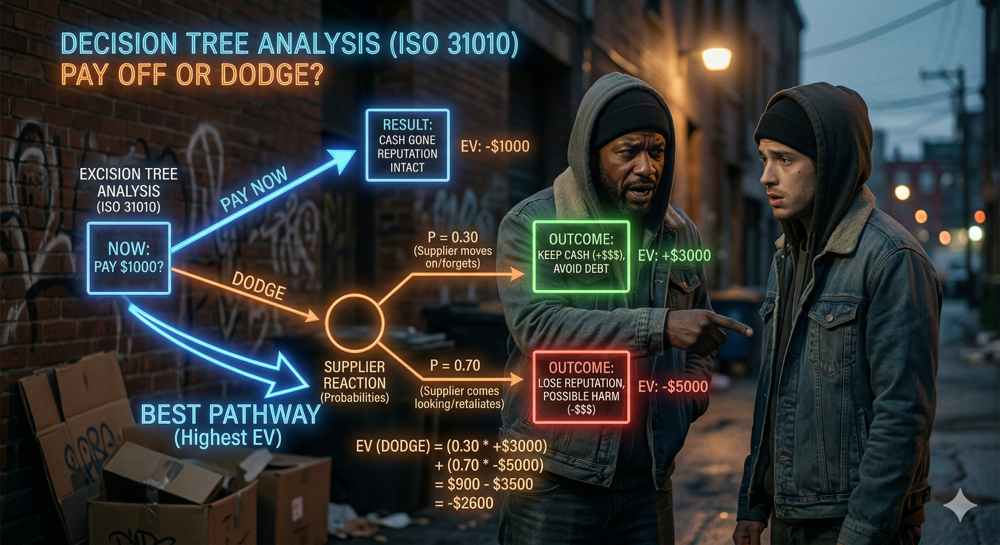

FADE IN: A hot summer afternoon. RICO (30s, sharp eyes, gold chain, always calculating) sits on a milk crate outside a bodega. His friend JAYLEN (20s, nervous, pacing) approaches. JAYLEN Yo Rico, I got a problem. I owe Manny twelve hundred for that shipment. I got the cash but if I pay him now, I'm broke for two weeks. If I dodge him... RICO (cutting him off) Sit down. You're about to make a decision based on feelings. That's how people end up in trunks. We're gonna do this with math.
Rico pulls a pen from behind his ear and flattens a brown paper bag on the crate. RICO First thing — you got a Decision Node. That's you, right now, with a choice to make. I draw it as a square. He draws a small square. RICO (CONT'D) Two branches come off that square. Branch one: Pay Manny now. Branch two: Dodge Manny. JAYLEN That's it? RICO That's the start. But each branch leads to more nodes — Chance Nodes. Those are circles. They represent what MANNY does next, and you don't control that. You can only estimate the probabilities.
RICO Let's map Branch One. You pay Manny the twelve hundred today. He draws the branch and a circle at the end. RICO (CONT'D) Chance node: What happens next? Two possibilities. One — Manny's happy, gives you priority on the next shipment. I'd say that's an 85% chance. The value of that? You make back two grand in a week. Net outcome: positive eight hundred. JAYLEN And the other? RICO Two — Manny takes the money and ghosts you anyway. Fifteen percent chance. You're out twelve hundred with nothing to show. Net outcome: negative twelve hundred. He writes the numbers on each branch. RICO (CONT'D) So the Expected Value of paying now is: 0.85 times 800, plus 0.15 times negative 1200. That's 680 minus 180. Equals positive 500.
RICO Now Branch Two. You dodge Manny. Keep the twelve hundred in your pocket. He draws the second main branch with another circle. RICO (CONT'D) Chance node: Manny's reaction. Three possibilities now. One — Manny doesn't care, moves on. Maybe 20% chance. You keep your twelve hundred. Net outcome: positive twelve hundred. JAYLEN That sounds good. RICO Hold on. Two — Manny sends someone to collect, adds a 50% penalty. That's 40% likely. Now you owe eighteen hundred. Net outcome: negative eighteen hundred. JAYLEN And three? RICO Three — Manny cuts you off permanently. No more supply. 40% chance. You keep the twelve hundred but lose your income stream. Long-term net outcome: negative five thousand over six months.
Rico writes out the math carefully. RICO Expected Value of dodging: 0.20 times 1200, plus 0.40 times negative 1800, plus 0.40 times negative 5000. He calculates. RICO (CONT'D) That's 240, minus 720, minus 2000. Total: negative 2,480. He circles both expected values. RICO (CONT'D) Pay now: positive 500. Dodge: negative 2,480. The decision tree just told you the answer. It's not even close. JAYLEN (staring at the bag) Damn. When you lay it out like that... RICO That's the whole point. Your gut said "keep the cash." The tree says "pay the man." Your gut doesn't do multiplication.
JAYLEN But what if I pay him and THEN he ghosts me? What do I do then? RICO Good. Now you're thinking in sequences. That's what makes a decision tree powerful — it handles chains of decisions. He extends the "Manny ghosts" branch with another square. RICO (CONT'D) New decision node: If Manny ghosts after you pay, you've got two new choices. One — find a new supplier. Two — confront Manny. JAYLEN Each of those has its own chances too? RICO Exactly. New supplier: 60% chance you find one in a week, 40% chance it takes a month. Confront Manny: 30% chance he makes it right, 70% chance it gets ugly. Every branch keeps splitting until you hit a terminal node — a final outcome with a dollar value.
RICO Here's the trick though. You don't solve a decision tree forward. You solve it BACKWARD. It's called "rolling back" or "folding back." JAYLEN Backward? RICO You start at the terminal nodes — the endpoints — and work your way back to the root. At every chance node, you calculate the expected value. At every decision node, you pick the branch with the HIGHEST expected value. He traces his finger from the tips of the branches back toward the root. RICO (CONT'D) By the time you get back to your original square — your first decision — every branch has been evaluated. The optimal path lights up like a highway. You just follow it. JAYLEN So the tree tells you the best move at EVERY step, not just the first one? RICO Now you're getting it. It's a complete strategy, not just a single choice.
JAYLEN But what if my probabilities are wrong? I'm just guessing that Manny ghosts 15% of the time. RICO Smart question. That's called sensitivity analysis. You test how much the answer changes when you change the inputs. He rewrites the pay-now calculation with different numbers. RICO (CONT'D) Say Manny's ghost probability isn't 15% — say it's 30%. Now the expected value of paying is: 0.70 times 800 plus 0.30 times negative 1200. That's 560 minus 360. Equals positive 200. JAYLEN Still positive. RICO Right. And the dodge path is still deeply negative. So even if your estimates are off by double, the decision doesn't change. That means your answer is ROBUST. If a small change in probability flipped the answer, you'd need to be more careful. But this one's solid.
JAYLEN What if I could find out for sure whether Manny would ghost me? RICO Ah, now you're talking about the Value of Perfect Information. If you KNEW Manny's move before deciding, how much more would you make? He thinks for a moment. RICO (CONT'D) With perfect info: if Manny's legit (85%), you pay and make 800. If he'd ghost (15%), you dodge and keep 1200. Expected value with perfect info: 0.85 times 800 plus 0.15 times 1200 equals 680 plus 180 equals 860. JAYLEN And without perfect info, the best was 500. RICO So perfect information is worth 860 minus 500 equals 360 dollars. That means if someone could tell you Manny's true intentions for less than 360 bucks, it's worth paying for that intel. JAYLEN (laughing) You're telling me to pay for a snitch? RICO I'm telling you information has a calculable value. Whether you buy it from a snitch or earn it from experience — that's your call.
Jaylen stares at the paper bag covered in branches, numbers, and circles. He takes a deep breath. JAYLEN I'm paying Manny. RICO (nodding) The tree doesn't lie, brother. Every branch, every probability, every outcome — it all points the same direction. He folds the bag. RICO (CONT'D) ISO 31010, Section B.9.3. Decision Tree Analysis. They use it in hospitals to decide on surgeries. In oil companies to decide where to drill. We use it on a milk crate to decide whether to pay a supplier. JAYLEN Same math though. RICO Same math. Different stakes. But the logic? Universal. Jaylen pulls out an envelope of cash, counts it, and heads down the block. Rico watches him go, then pulls out a fresh paper bag and starts sketching a new tree — this one for himself. FADE OUT. — END —